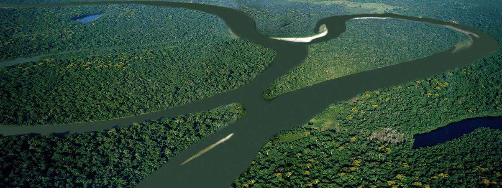

LORETO (PERÚ)
Reserva natural del planeta
Por esta región cruza el caudaloso río Amazonas, el más largo del mundo, que une pueblos que habitan el corazón de la selva. En Loreto podemos encontrar paisajes exóticos como la Reserva Nacional Pacaya Samiria, que alberga a los delfines rosados, y la Reserva Nacional Allpahuayo Mishana, por los tipos de suelos y aves endémicas. Sus bosques crecen sobre arena blanca y poseen una fauna y flora muy diversa.
La convivencia con comunidades nativas es una actividad cotidiana. Sus ciudades poseen gran belleza arquitectónica. Loreto es una experiencia que se vive a todo pulmón.
Ubicación: Al noreste del Perú, comprende principalmente zonas de Selva Baja o Llano Amazónico. Es una región fronteriza.